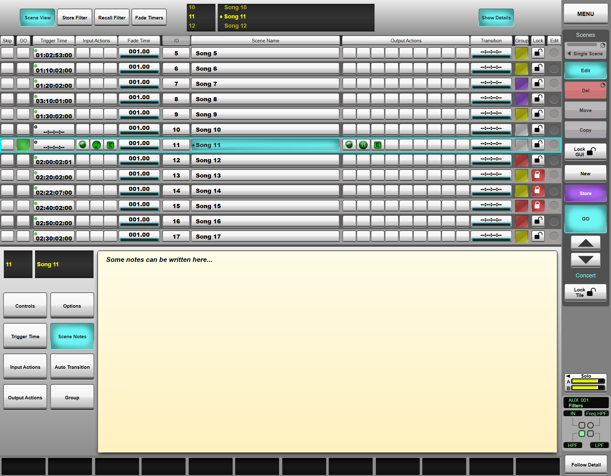

Naming and Adding Notes to Scenes
To name a scene, touch its row in the scene list (in MENU > Automation) so that it appears in the detail dialogue below the list;
If the detail area is not shown, press the Show Details button at the top of the page.

Double-tap the current name (in the black box, preceded by the ID number) to open up a keyboard;
Enter the new name and press OK to apply it. Touch the red X in the top right of the keyboard to cancel and revert to the previous name.
The Next and Prev buttons on the keyboard popup (Tab and Shift+Tab respectively if using a USB keyboard) allow quick scrolling through scenes without having to close and re-open the keyboard between each scene.
Scene Notes
You may write scene-specific notes to remind you of any pertinent details.
Notes are typed and viewed in the detail dialogue:
Touch the Scene Name column for the required scene. The scene name detail dialogue will open in the bottom half of the screen.
Note: To navigate from a different configuration page, touch the Scene Name button in the left of the screen.Double-tap inside the text area which appears beneath the black scene name box to open up a keyboard;
Type the notes using a USB or on-screen keyboard and touch OK when finished.
Links to Further Automation Help:
- Automation Overview
- Scene Time Functions
- Scene Input and Output Actions
- Scene Groups
- Function Filters
- Scene List Management
- Automation Preview Mode